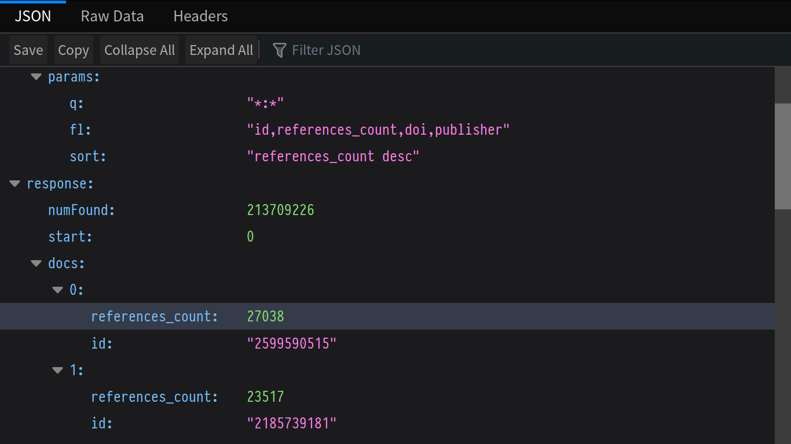
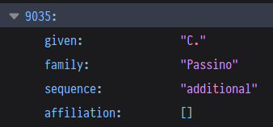

Combining Interactive Exploration and Search
for Navigating Academic Citation Data
trivia time!
∃ paper with more than
A: 10,000
B: 20,000
C: 30,000
sources
B(and A)
trivia time!
∃ paper cited $1 times and
its title starts with $2
A: 240,551; "Protein ..."
B: 196,067; "Cleavage ..."
C: 182,776; "A rapid ..."
trick question
Challenges
Page 1 of 1452
Defaults to
true for historical reasons,
but users are strongly encouraged to
set this to false
for stability
const doc = {
id: "2142920027",
author: [ "Frank Steinicke", "Timo Ropinski", "Klaus H. Hinrichs" ],
author_count: 3,
cited_by_count: 10,
conferenceseries: "International Conference in Central Europe on …",
date: "2005-01-01",
doc_type: "Conference",
references: [ "51251585", "147989794", "1798904708", "2111204873" ],
references_count: 4,
title: "Multimodal Interaction Metaphors …",
venue: "international conference in central europe on computer …",
year: 2005
}
Papers.txt: 214.012.980 lines
paperid doi title …
1968760011, …, …, …
2140101301, …, …, …
2374592160, …, …, …
Authors.txt: 256.683.554 lines
authorid name
1139, Jennifer Putzi
1611, 純子 貝原
1799, Hossein Gholaman
PaperAuthorAffiliations.txt: 566.136.708 lines
paperid authorid position
37, 2151921381, 2
37, 2722638736, 3
37, 2767506227, 1
it's complicated
const query = {
"fl": "*,sq:[subquery]",
"q": "id:1570265525",
"sort": "year desc",
"sq.fq": "-(author:'Manfred Reichert')",
"sq.q": "{!terms f=id v=$row.references}",
"sq.rows": 10,
"sq.sort": "year desc",
"sq.start": 0
};
expr = f'''
select(
rollup(
sort(
select(
search({collection}, q=author:"{author}",
fl="author, author_count, id",
sort="id desc", qt=/export, rows={rows}),
add(1,indexOf(author, "{author}")) as position,
if(eq(author_count,position), 1,0) as is_last),
by="position asc"),
over="position", count(*), sum(is_last)),
count(*) as count, position, sum(is_last) as senior_count
)'''
expr = f'''
select(
rollup(
sort(
select(
search({collection}, q=author:"{author}",
fl="author, author_count, id",
sort="id desc", qt=/export, rows={rows}),
add(1,indexOf(author, "{author}")) as position,
if(eq(author_count,position), 1,0) as is_last),
by="position asc"),
over="position", count(*), sum(is_last)),
count(*) as count, position, sum(is_last) as senior_count
)'''
expr = f'''
select(
rollup(
sort(
select(
search({collection}, q=author:"{author}",
fl="author, author_count, id",
sort="id desc", qt=/select, rows={rows}),
add(1,indexOf(author, "{author}")) as position,
if(eq(author_count,position), 1,0) as is_last),
by="position asc"),
over="position", count(*), sum(is_last)),
count(*) as count, position, sum(is_last) as senior_count
)'''
trivia time!
journal article max(|authors|)
A: medicine
B: physics
"Monday, 27 August 2012"
Evaluation
Evaluation
free and open source
tracking + filtering
extendable
many new possibilities
?